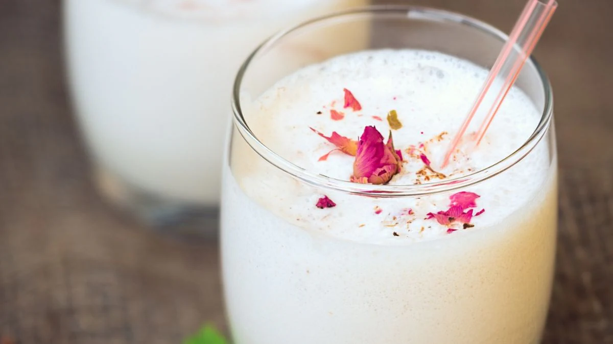

Home
Gulab Lassi

Description
Lassi is a popular Indian beverage, particularly in Punjab, made by blending yogurt (dahi), water, and spices.
Gulab Lassi, also known as Rose Lassi, is a refreshing Indian yogurt-based drink flavored with rose water or rose
syrup. It's a variation of the traditional lassi, where the addition of rose gives it a distinct floral aroma
and taste.
Ingredients
- 300 gms Plain Yogurt (Curd)300 gms Plain Yogurt (Curd)
- 50 gram Sugar
- 100 ml Water
- 1 ml Rose water
- 10-15 Rose Petals
Steps
- In a large bowl add plain yogurt. Then mix it well using a whisk or hand blender until smooth
- Add sugar, mix it well until the sugar is dissolved in the yogurt.
- Now add water to thin out the lassi a bit
- Add rose water and few rose petal leaves.
- Keep in fridge for chilling.
- Garnish with rose petal or as per your choice and serve cold